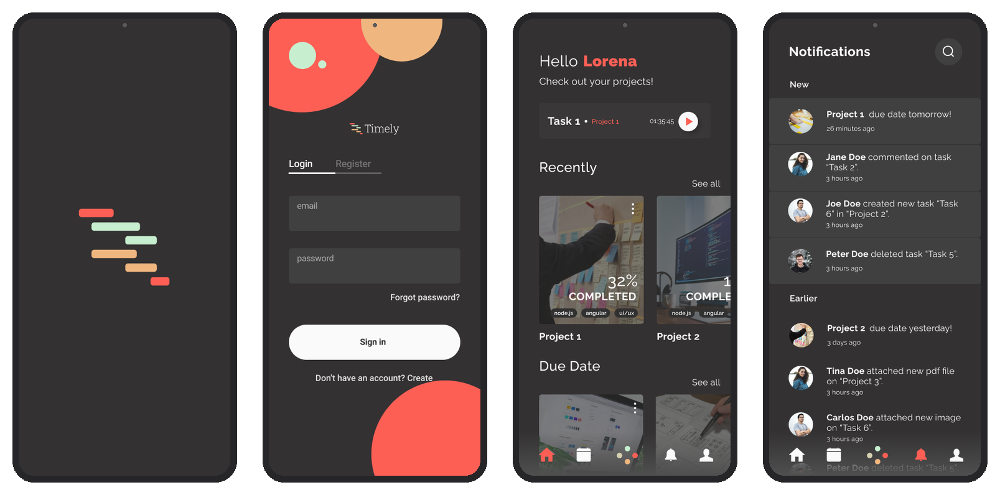
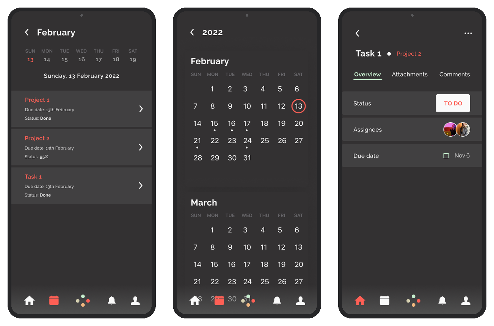
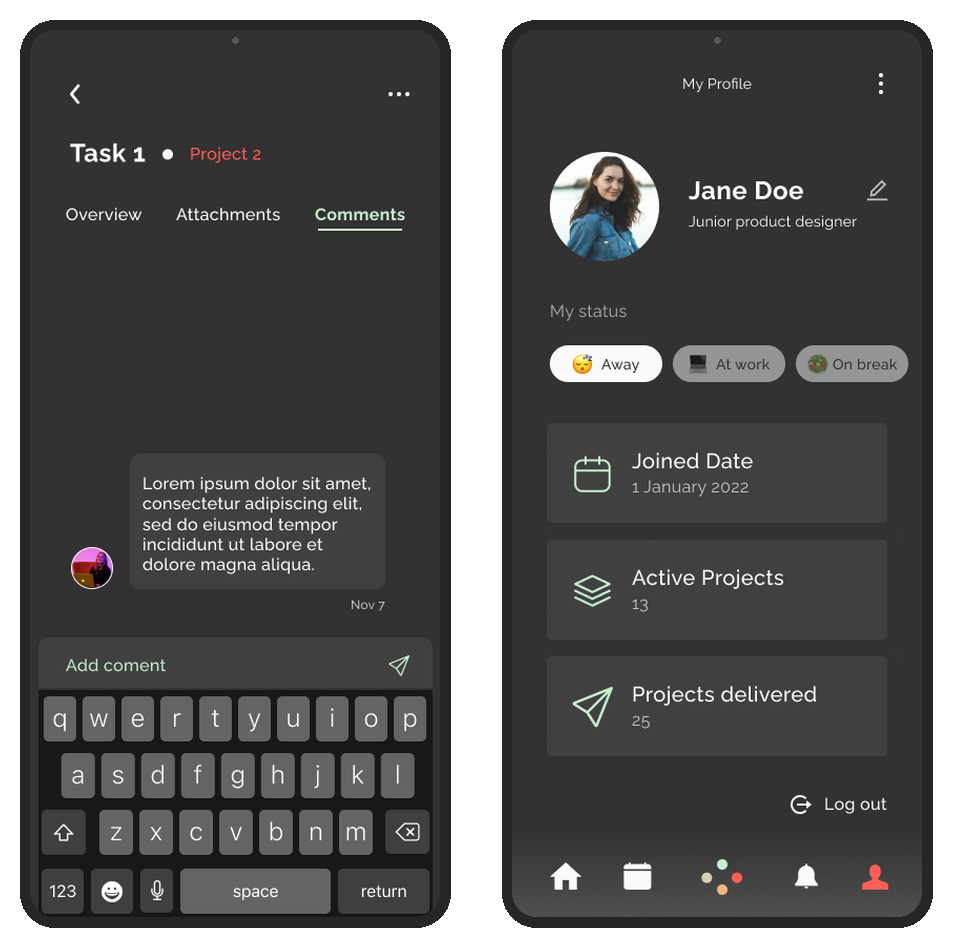

Timely
A time-tracking app for teams and freelancers, designed for a UX Design and Management course at the University of Oulu — grounded in real interviews, not assumptions.
Summary
Time tracking apps let people log how much time they spend on tasks or projects — useful for companies monitoring productivity, freelancers proving billable hours, and students juggling group work. I designed Timely, as a paired course project, to serve all three groups without feeling like enterprise software.
give people juggling several projects one honest place to see what's due, what's done, and where their time actually went?
Visual direction
Interviewees were explicit that dark mode should stay — easier on the eyes for something checked repeatedly through a workday. Against the near-black background, three accent colors carry meaning rather than decoration: coral red for primary actions and alerts, mint green for positive status and profile highlights, and soft orange for secondary detail — keeping the palette small enough that color itself becomes a wayfinding signal.
Talking to real users first
Before any screen existed, we ran five 30-minute interviews across our three target groups — IT employees, freelancers, and students — to understand how they currently manage projects and track time.
- Every interviewee had already used some project-management tool, which made our app's core metaphors (calendar for dates, paperclip for attachments, plus button for adding things) instantly familiar
- Freelancers and employees cared most about accurate time tracking, since it affects how fairly they get paid; students cared more about deadlines than time logs
From persona to product
We built a persona — Matti Heikkinen, a software developer in Helsinki juggling several projects across his laptop, Google Drive, and Trello — to keep design decisions anchored in a specific person's frustrations rather than an abstract user. Matti's goal was simple: one place for every project and task, instead of three disconnected tools.
From there we mapped a task flow, then deliberately built grayscale wireframes before any color entered the picture — keeping early decisions about structure and flow separate from visual polish, so usability problems couldn't hide behind good looks. Only once the wireframes and flow held up did we move into the visual design and build a working prototype.

Entry & home
Keeping projects, tasks and time in view
The calendar answers "what's due," the task screen answers "what's the status," and the profile screen keeps someone's own workload — active projects, delivered work, current status — visible at a glance. None of these compete for attention; each answers one question.

Calendar & task overview

Comments & profile
Testing the prototype
With a working prototype in hand, we went back to the same three people from the initial interviews for observation sessions — watching them complete specific tasks (signing up, creating a project, tracking time, commenting on a task) without any guidance from us, so we could see where the design itself did or didn't communicate.
observation participants completed every task — sign up, create a project, track time, check the calendar — without any help from us, confirming the navigation and structure decided back at the wireframe stage actually held up.
Outcome
Every observation participant completed every task — sign up, create a project, create a task, track time, check the calendar — without assistance, validating the navigation and flow decisions made back at the wireframe stage.